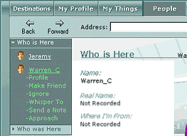

To say something privately to another person in Desktop World, you can choose the Whisper To option. The Whisper To option is located on the People menu, under the name of each member on the Who Is Here submenu. Only the person selected will be able to view this message.

When you choose the Whisper To option under the name of a member on the Who Is Here list, a Whisper box appears. This window contains a text box to compose your message and a whisper history area that displays your private conversation. The window also contains a Close button  if you decide not to send your message. Clicking the Close button deletes your message and closes the Whisper window.
if you decide not to send your message. Clicking the Close button deletes your message and closes the Whisper window.

When you receive a whisper, you see a message in the chat history area that informs you that another member is whispering to you. A  button also appears next to this message. If you click the View button, a Whisper box that includes that member's message and an area to type a reply appears.
button also appears next to this message. If you click the View button, a Whisper box that includes that member's message and an area to type a reply appears.
In the Whisper box, there is a chat text area to type your response, and a Close button  if you decide not to reply. To reply to a whisper, type your message in the text box and press ENTER. Only the person you are whispering to sees your response. If you click the Close button, the conversation is ended and the sender's whispered message is deleted.
if you decide not to reply. To reply to a whisper, type your message in the text box and press ENTER. Only the person you are whispering to sees your response. If you click the Close button, the conversation is ended and the sender's whispered message is deleted.
You may whisper to anyone present in Desktop World except guests who are ignoring you. A whispered message can only be sent to one person at a time, but you may have as many separate, simultaneous whispered conversations as you like.
Note Whispered conversations can be seen only be the sender and receiver. Other members of Desktop World are not informed when a member sends or receives a message, and they cannot see the whispered conversation.